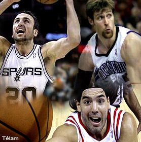

09:00 - DEPORTES
Una jornada a pleno para los argentinos en la NBA
Esta noche se presentarán ‘Manu’ Ginóbili, con San Antonio Spurs ante Charlotte, desde las 21 de Argentina. Luis Scola, con Houston Rockets, jugará ante Miami, desde las 22.30. Y Andrés Nocioni, con Sacramento, visitará a Philadelphia. También hoy: Washington, con Oberto y Milwaukee, con Delfino.

El escolta Emanuel Ginóbili visitará con San Antonio Spurs a Charlotte Bobcats, desde las 21 de la Argentina, mientras que Luis Scola jugará como local en Houston Rockets ante Miami Heat, desde las 22.30, en cotejos a celebrase esta noche en una nueva jornada de la NBA.
Además, Sacramento Kings, con Andrés Nocioni, visitará a Philadelphia Sixers (21), Washington Wizzards, en donde Fabricio Oberto tiene escasa participación, jugará en Chicago ante los Bulls (22.30) y Milwaukee Bucks, con Carlos Delfino, irá a California para jugar ante Golden State Warriors (0.30).
San Antonio (24-13) buscará su cuarto triunfo consecutivo ante los Bobcats (17-19). Ginóbili promedia 12.7 puntos, 3.2 rebotes y 4.2 asistencias por partido, en 25 minutos y 41 segundos.
Houston (22-17) será local en el Toyota Center ante Miami Heat (19-18). Scola está desarrollando un excelente temporada en un equipo que siente la ausencia del chino Yao Ming y de Tracy McGrady. El ala-pivote bonaerense promedia 14.6 puntos, 8.7 rebotes y 1.8 asistencias en 31 minutos y 36 segundos por partido, consigna el sitio oficial de la NBA.
Anoche jugaron: Boston Celtics 83 (Pierce 20)-Chicago Bulls 96 (Deng 25) y Utah Jazz 97 (Boozer 19 y 13 reb)-Cleveland Cavaliers 96 (James 36).
Esta noche también jugarán LA Lakers-LA Clippers; Portland Trail Blazers-Orlando Magic; Dallas Mavericsk-Oklahoma City Thunder; Detroit Pistons-New Orleans Hornets; New Jersey Nets-Indiana Pacers; Atlanta Hawks-Phoenix Suns y New York Knicks-Toronto Raptors